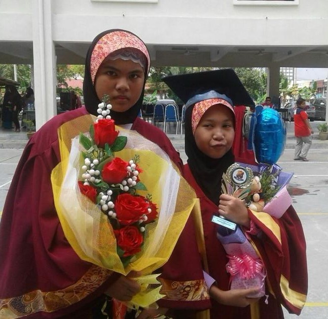
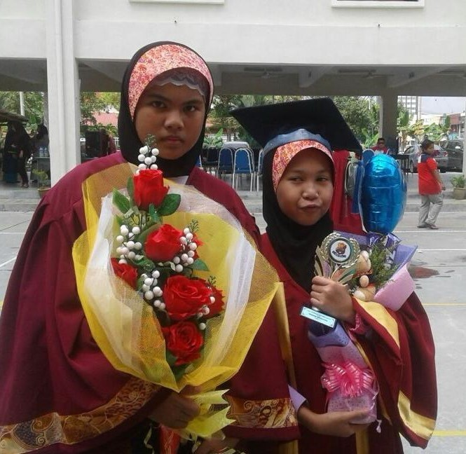
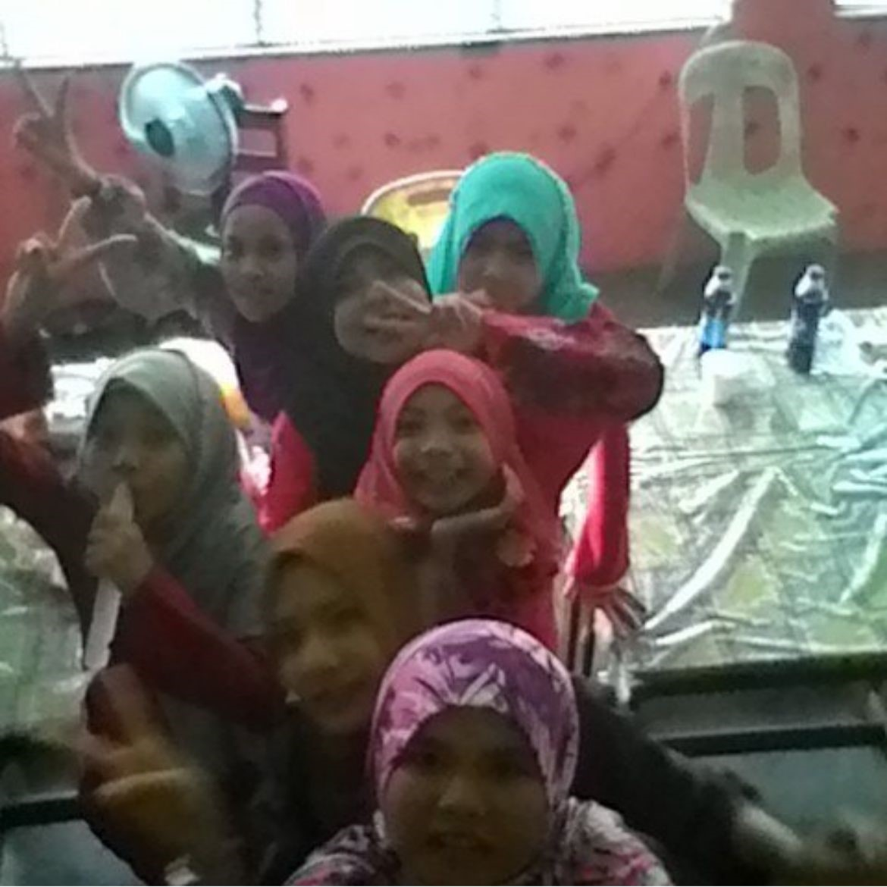
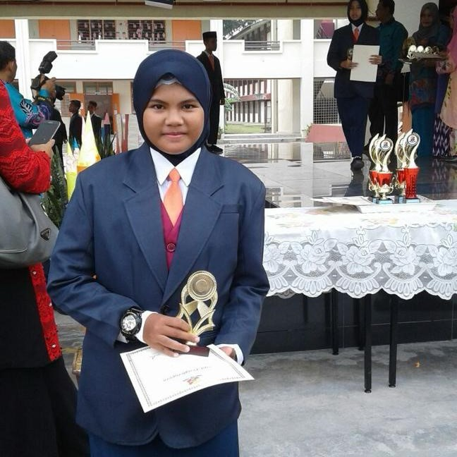
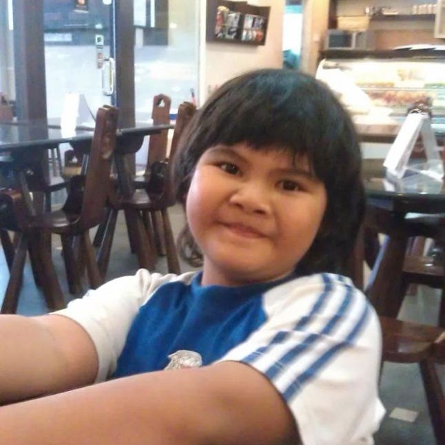

Middle School
| LOGO | NAME | ADDRESS | YEAR | ROLES |
| SK Convent Batu Pahat | 250D Jalan Tan Swee Hoe 83000 Batu Pahat Johor | 2011-2013 | None | |
| Sekolah Agama Bukit Pasir | Jalan Linau, Bukit Pasir, 83000 Batu Pahat, Johor | 2011-2013 | None | |
| SK Seri Puteri | Pesta, Kampung Kenangan Dato Onn 83000 Batu Pahat Johor | 2013-2016 | Prefect | |
| Sekolah Agama Kebangsaan Dato' Onn | Jalan Perak, Kampung Kenangan Dato Onn, 83000 Batu Pahat, Johor | 2013-2016 | None |
The reason I went to a different school is that my mathematics teacher, Cikgu Arif, was fierce and already snapped many that long yellow ruler. And there was a senior being hit by a chair, I am not sure about the validity but I was afraid of being taught by him- this is me when I was in year 3. And I was admitted to the hospital a few times because I was "sick". After a few weeks, I moved to another school. Because of the distance from my new school and my babysitter's house is far away, my mother found me a new babysitter near the new school. Where it's led me to move to another religious school.
Some middle school pictures
 




